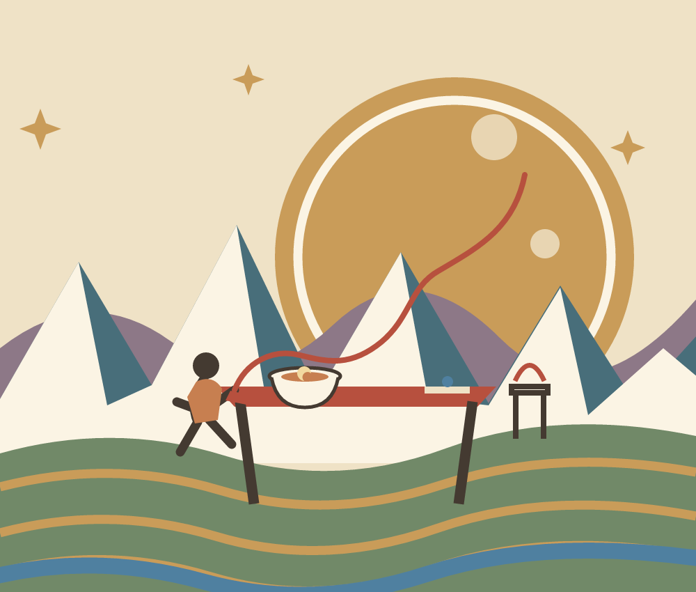
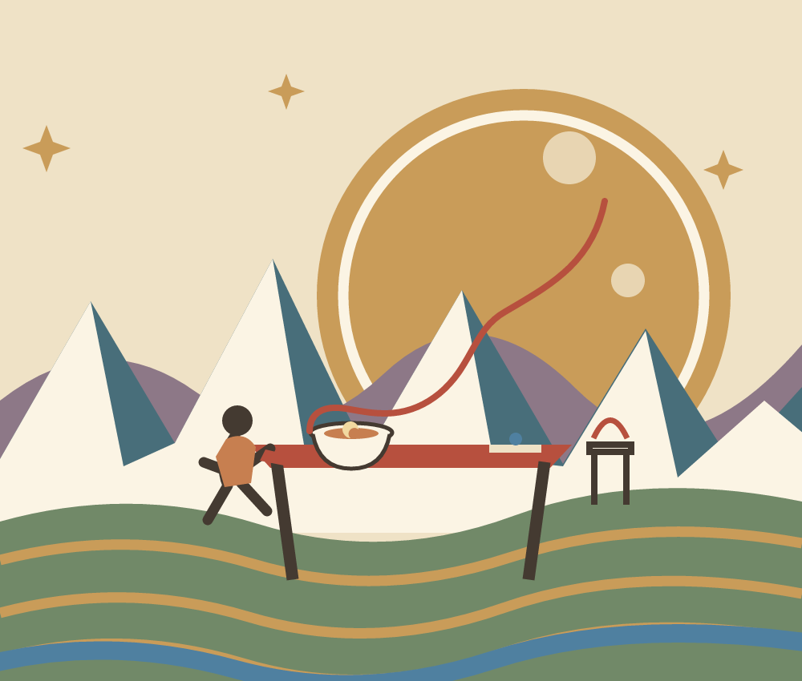

Vyt Aitken · a paper-cut fable · 12 October 2026
The Moon Guest

The basin, fields, cliff shapes, and people are invented. This is a fable, not a view of a particular place or community.

Bowl Invitation. In this cut the line begins at the meal. The figure's hand stays open beside it; the invitation may come from the person, the bowl, or their shared reach.
Back to Field and Channel